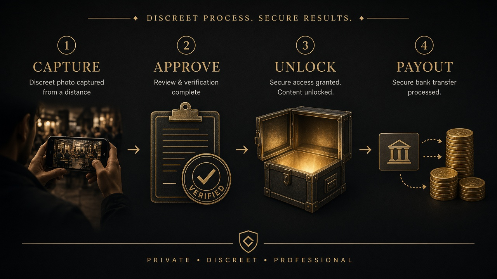
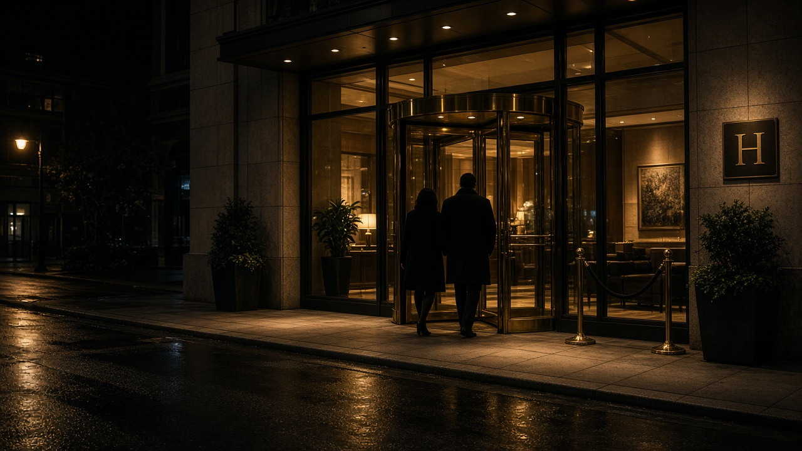
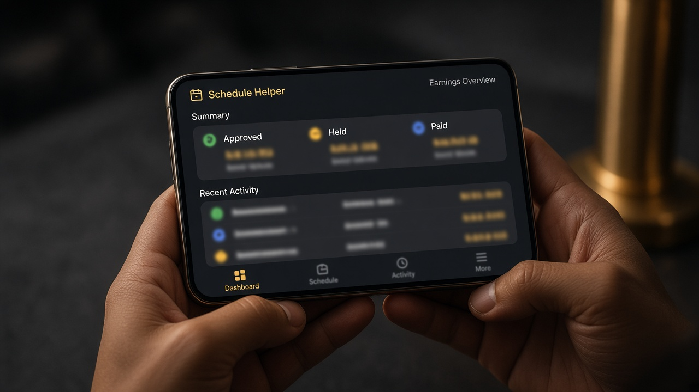
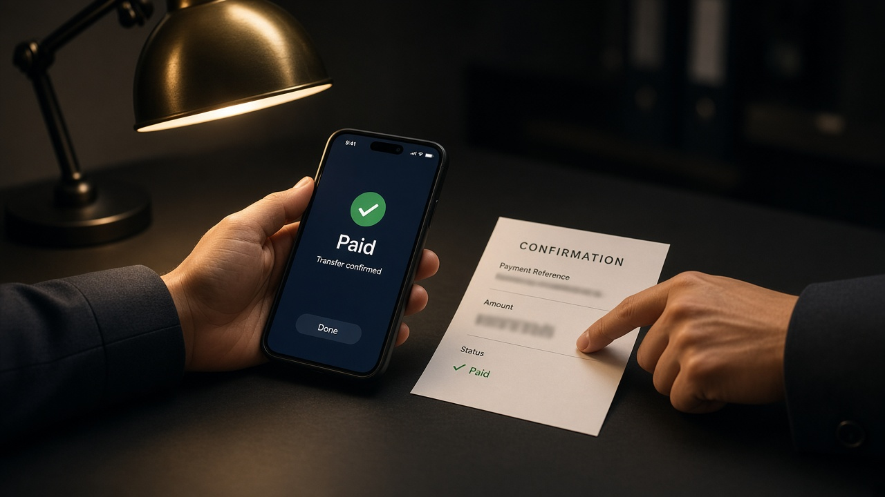

Standard
Documentation set
GYD$31,500
Your share of GYD$45,000 — public togetherness, dining, ID clarity.
Field team · Guyana · GYD
Solid fieldwork for adult relationship cases. You get paid for approved evidence — quality and lawful public observation first. Clients never see your name.
Split: platform 30% / investigator 70% of the client evidence fee. High-proof approved sets earn an extra bonus. Witness statements and monitoring assignments pay separately. Payouts release after client unlock and case-manager confirmation.
Earnings move in stages. Nothing pays out until quality review and client unlock clear — then your case manager confirms the transfer.

Rates match client unlock tiers. Figures below are your net after the platform share (70%). High-proof includes a dedicated bonus.
Standard
GYD$31,500
Your share of GYD$45,000 — public togetherness, dining, ID clarity.
Strong
GYD$66,500
Your share of GYD$95,000 — kissing, holding hands, clear public affection.
High-proof + bonus
GYD$137,500
GYD$122,500 (70% of GYD$175,000) + GYD$15,000 high-proof bonus for approved making-out sets (public, vehicle, or hotel/house arrival patterns).
Add-on
GYD$35,000
Your share of GYD$50,000 — third party confirming they saw them together.
Earn GYD$31,500 (70% of GYD$45,000) for approved public togetherness: dining, walking, clear identity in a lawful public place.
Earn GYD$66,500 (70% of GYD$95,000) when approved captures show kissing or clear public affection.
Earn GYD$137,500 total when the set clears the premium bar: GYD$122,500 (70% of GYD$175,000) plus a GYD$15,000 high-proof bonus after approval. This means making out — passionate kissing and affection — not graphic imagery.
making_out, hotel entry, or overnight patterns when appropriateArrival patterns also support the high-proof bar when paired with strong affection evidence — still public-area observation only.

Earn GYD$35,000 (70% of GYD$50,000) when an approved third-party witness confirms they saw the subjects together — written or recorded statement with date, place, and what they observed.
witness_statement · separate add-on from photo tiersWhen you are assigned to a 7-, 14-, or 30-day watch, you earn a field stipend for active coverage days — separate from evidence unlocks.
GYD$18,000
Per assigned coverage day on a monitoring plan.
GYD$25,000
Paid when a full week of assigned watch is completed cleanly.
After you join, open Schedule Helper → Earnings to see approved items move from held to paid in GYD. Amounts stay private to you and case ops.

After client unlock, your case manager marks the payout paid and arranges the transfer. You will see confirmation in Earnings — no public admin links on this site.

Adults 18+ only. Lawful public observation — no illegal devices, no trespass, no confrontation. Apply online; we review carefully.